pacman::p_load(sf, tidyverse, tmap, spdep, funModeling)Take Home Exercise 1
Overview
Developing countries, like Nigeria, are most affected by water shortages and poor water quality. Up to 80% of illnesses in the developing world are linked to inadequate water and sanitation. Despite technological advancement, providing clean water to the rural community is still a major development issues in many countries globally, especially countries in the Africa continent.
To address the issue of providing clean and sustainable water supply to the Nigerian rural community, a global Water Point Data Exchange (WPdx) project has been initiated. The main aim of this initiative is to collect water point related data from rural areas in Nigeria at the water point or small water scheme level.
Getting Started
Packages Used
The R packages used for the analysis are as follows:
sf - used for importing, managing, and processing geospatial data
tidyverse - a collection of packages for data science tasks
tmap - used for creating thematic maps, such as choropleth and bubble maps
spdep - collection of functions to create spatial weights matrix objects from polygon ‘contiguities’
funModeling - used to analyze data when we need to reduce variable cardinality in predictive modeling
Datasets Used
| Type | Name | Format | Description |
|---|---|---|---|
| Aspatial | WPdx Global Data Repositories | Shapefile | Water Point Data |
| Geospatial | geoBoundaries | Shapefile | Political Administrative Boundaries |
Importing Data
Two datasets will be usedm namely, geo_export and nga.
Importing water point geospatial data
wp <- st_read(dsn = "geodata",
layer = "geo_export",
crs = 4326) %>%
filter(clean_coun == "Nigeria")From the output message, we learn that:
Geometry type is point
293223 features, 72 fields
Assigned CRS is WGS 84, the ‘World Geodetic System 1984’
write_rds(wp, "geodata/wp_nga.rds")The extracted data table, wp, has been saved in rds data format as wp_nga.rds.
Importing Nigeria LGA boundary data
nga <- st_read(dsn = "geodata",
layer = "NGA",
crs = 4326)From the output message, we learn that:
Geometry type is multipolygon
774 features, 5 fields
Assigned CRS is WGS 84, the ‘World Geodetic System 1984’
Data Wrangling
Recoding NA values into string
wp_nga <- read_rds("geodata/wp_nga.rds") %>%
mutate(status_cle = replace_na(status_cle, "Unknown"))All “NA” values in status_cle field has been recoded into “Unknown”
Exploratory Data Analysis
freq(data=wp_nga,
input = 'status_cle')The status of all water points in Nigeria are displayed above.
Extracting Water Point Data
Extracting functional water point
wpt_functional <- wp_nga %>%
filter(status_cle %in%
c("Functional",
"Functional but not in use",
"Functional but needs repair"))freq(data=wpt_functional,
input = 'status_cle')The status of all functional water points in Nigeria are extracted and displayed above.
Extracting non-functional water point
wpt_nonfunctional <- wp_nga %>%
filter(status_cle %in%
c("Abandoned/Decommissioned",
"Abandoned",
"Non-Functional",
"Non functional due to dry season",
"Non-Functional due to dry season"))freq(data=wpt_nonfunctional,
input = 'status_cle')The status of all non-functional water points in Nigeria are extracted and displayed above.
Extracting water point with Unknown class
wpt_unknown <- wp_nga %>%
filter(status_cle == "Unknown")The status of all water points with unknown status in Nigeria are extracted.
Performing Point-in-Polygon Count
nga_wp <- nga %>%
mutate(`total wpt` = lengths(
st_intersects(nga, wp_nga))) %>%
mutate(`wpt functional` = lengths(
st_intersects(nga, wpt_functional))) %>%
mutate(`wpt non-functional` = lengths(
st_intersects(nga, wpt_nonfunctional))) %>%
mutate(`wpt unknown` = lengths(
st_intersects(nga, wpt_unknown)))The intersections for the various water points are mapped as shown above
Saving the Analytical Data Table
nga_wp <- nga_wp %>%
mutate(pct_functional = `wpt functional`/`total wpt`) %>%
mutate(`pct_non-functional` = `wpt non-functional`/`total wpt`)write_rds(nga_wp, "geodata/nga_wp.rds")The extracted data table, nga_wp, has been saved in rds data format as nga_wp.rds with pct_functional and pct_non-functional fields.
Visualising the spatial distribution of water points
nga_wp <- read_rds("geodata/nga_wp.rds")
wp_functional <- qtm(nga_wp, "wpt functional")+
tm_layout(legend.outside = FALSE,
legend.stack = "vertical",
legend.text.size =0.5,
legend.title.size=0.5)
wp_nonfunctional <- qtm(nga_wp, "wpt non-functional")+
tm_layout(legend.outside = FALSE,
legend.stack = "vertical",
legend.text.size =0.5,
legend.title.size=0.5)
tmap_arrange(wp_functional, wp_nonfunctional, asp=1, ncol=2)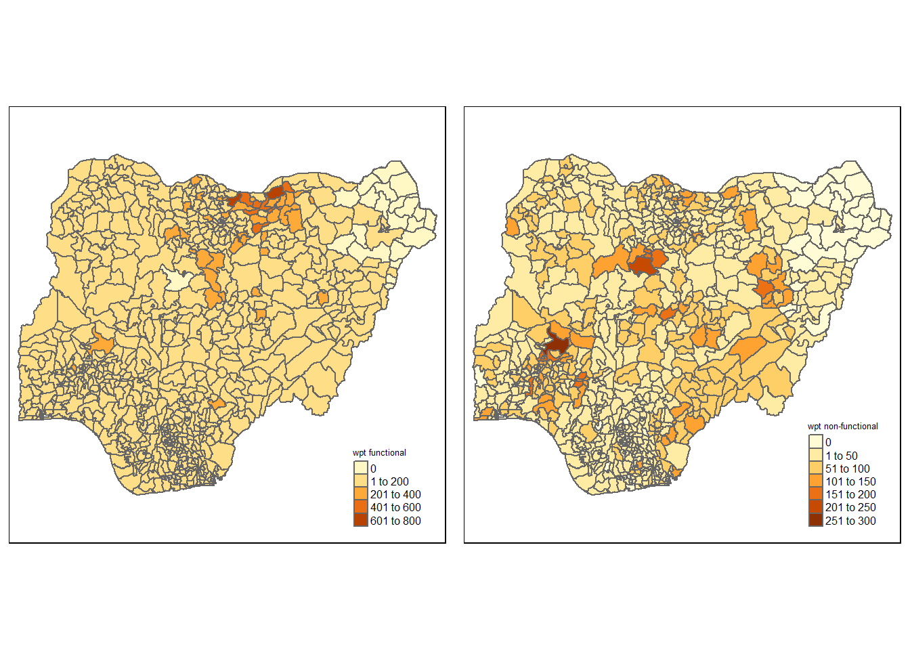
Global Spatial Autocorrelation
Computing Contiguity Spatial Weights
qcwm = poly2nb(nga_wp,
queen=TRUE)
summary(qcwm)Neighbour list object:
Number of regions: 774
Number of nonzero links: 4440
Percentage nonzero weights: 0.7411414
Average number of links: 5.736434
1 region with no links:
86
Link number distribution:
0 1 2 3 4 5 6 7 8 9 10 11 12 14
1 2 14 57 125 182 140 122 72 41 12 4 1 1
2 least connected regions:
138 560 with 1 link
1 most connected region:
508 with 14 linksThe summary report above shows that there are 774 area units in Nigeria. The most connected area unit has 14 neighbours and one area unit with no neighbours.
Row-standardised weights matrix
set.ZeroPolicyOption(TRUE)[1] FALSErswm_q <- nb2listw(qcwm,
style="W",
zero.policy = TRUE)
rswm_qCharacteristics of weights list object:
Neighbour list object:
Number of regions: 774
Number of nonzero links: 4440
Percentage nonzero weights: 0.7411414
Average number of links: 5.736434
1 region with no links:
86
Weights style: W
Weights constants summary:
n nn S0 S1 S2
W 773 597529 773 285.0658 3198.414Moran’s I Test
moran.test(nga_wp$'wpt functional',
listw=rswm_q,
zero.policy = TRUE,
na.action=na.omit)
Moran I test under randomisation
data: nga_wp$"wpt functional"
weights: rswm_q n reduced by no-neighbour observations
Moran I statistic standard deviate = 25.665, p-value < 2.2e-16
alternative hypothesis: greater
sample estimates:
Moran I statistic Expectation Variance
0.5512247163 -0.0012953368 0.0004634494 moran.test(nga_wp$'wpt non-functional',
listw=rswm_q,
zero.policy = TRUE,
na.action=na.omit)
Moran I test under randomisation
data: nga_wp$"wpt non-functional"
weights: rswm_q n reduced by no-neighbour observations
Moran I statistic standard deviate = 20.043, p-value < 2.2e-16
alternative hypothesis: greater
sample estimates:
Moran I statistic Expectation Variance
0.433932927 -0.001295337 0.000471516 The Moran’s I test for functional and non-functional water points show that water points are clustered with functional water points being clustered closer together than the non-functional ones.
Geary’s C Test
geary.test(nga_wp$'wpt functional', listw=rswm_q)
Geary C test under randomisation
data: nga_wp$"wpt functional"
weights: rswm_q
Geary C statistic standard deviate = 15.042, p-value < 2.2e-16
alternative hypothesis: Expectation greater than statistic
sample estimates:
Geary C statistic Expectation Variance
0.462472090 1.000000000 0.001277003 geary.test(nga_wp$'wpt non-functional', listw=rswm_q)
Geary C test under randomisation
data: nga_wp$"wpt non-functional"
weights: rswm_q
Geary C statistic standard deviate = 14.457, p-value < 2.2e-16
alternative hypothesis: Expectation greater than statistic
sample estimates:
Geary C statistic Expectation Variance
0.6170907765 1.0000000000 0.0007014859 The Geary’s C Test confirms that water points in Nigeria are clustered with functional water points being clustered closer together than the non-functional ones.
Spatial Correlogram
Moran’s I correlogram and plot
MI_corr_f <- sp.correlogram(qcwm,
nga_wp$'wpt functional',
order=6,
method="I",
style="W")
plot(MI_corr_f)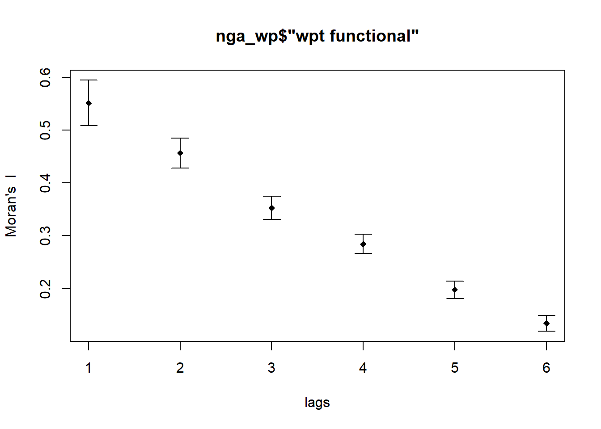
MI_corr_nf <- sp.correlogram(qcwm,
nga_wp$'wpt non-functional',
order=6,
method="I",
style="W")
plot(MI_corr_nf)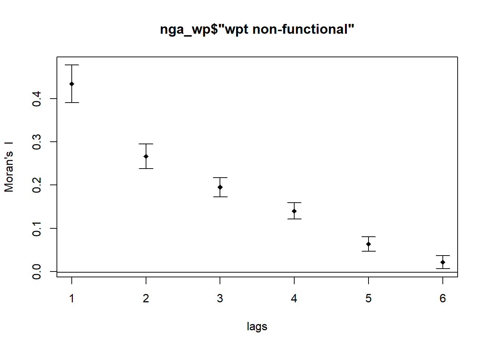
By plotting the output might not allow us to provide complete interpretation. This is because not all autocorrelation values are statistically significant. Hence, it is important for us to examine the full analysis report by printing out the analysis results as in the code chunk below.
print(MI_corr_f)Spatial correlogram for nga_wp$"wpt functional"
method: Moran's I
estimate expectation variance standard deviate Pr(I) two sided
1 (773) 5.5122e-01 -1.2953e-03 4.6345e-04 25.665 < 2.2e-16
2 (773) 4.5658e-01 -1.2953e-03 1.9860e-04 32.490 < 2.2e-16
3 (773) 3.5308e-01 -1.2953e-03 1.1980e-04 32.377 < 2.2e-16
4 (773) 2.8472e-01 -1.2953e-03 8.6093e-05 30.825 < 2.2e-16
5 (773) 1.9800e-01 -1.2953e-03 6.7605e-05 24.239 < 2.2e-16
6 (773) 1.3429e-01 -1.2953e-03 5.6402e-05 18.054 < 2.2e-16
1 (773) ***
2 (773) ***
3 (773) ***
4 (773) ***
5 (773) ***
6 (773) ***
---
Signif. codes: 0 '***' 0.001 '**' 0.01 '*' 0.05 '.' 0.1 ' ' 1print(MI_corr_nf)Spatial correlogram for nga_wp$"wpt non-functional"
method: Moran's I
estimate expectation variance standard deviate Pr(I) two sided
1 (773) 4.3393e-01 -1.2953e-03 4.7152e-04 20.0433 < 2.2e-16
2 (773) 2.6647e-01 -1.2953e-03 2.0206e-04 18.8374 < 2.2e-16
3 (773) 1.9507e-01 -1.2953e-03 1.2189e-04 17.7863 < 2.2e-16
4 (773) 1.4019e-01 -1.2953e-03 8.7589e-05 15.1181 < 2.2e-16
5 (773) 6.3735e-02 -1.2953e-03 6.8779e-05 7.8413 4.459e-15
6 (773) 2.1698e-02 -1.2953e-03 5.7380e-05 3.0354 0.002402
1 (773) ***
2 (773) ***
3 (773) ***
4 (773) ***
5 (773) ***
6 (773) **
---
Signif. codes: 0 '***' 0.001 '**' 0.01 '*' 0.05 '.' 0.1 ' ' 1This shows that both functional and non-functional water points are not correlated when distance is increased as the results are statistically significant.
Geary’s C correlogram and plot
GC_corr_f <- sp.correlogram(qcwm,
nga_wp$'wpt functional',
order=6,
method="C",
style="W")
plot(GC_corr_f)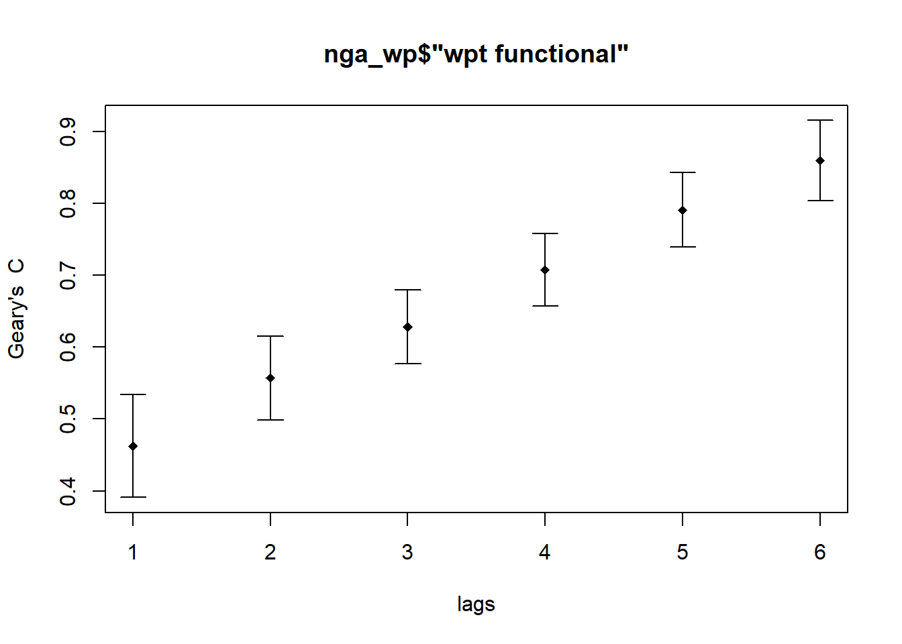
GC_corr_nf <- sp.correlogram(qcwm,
nga_wp$'wpt non-functional',
order=6,
method="C",
style="W")
plot(GC_corr_nf)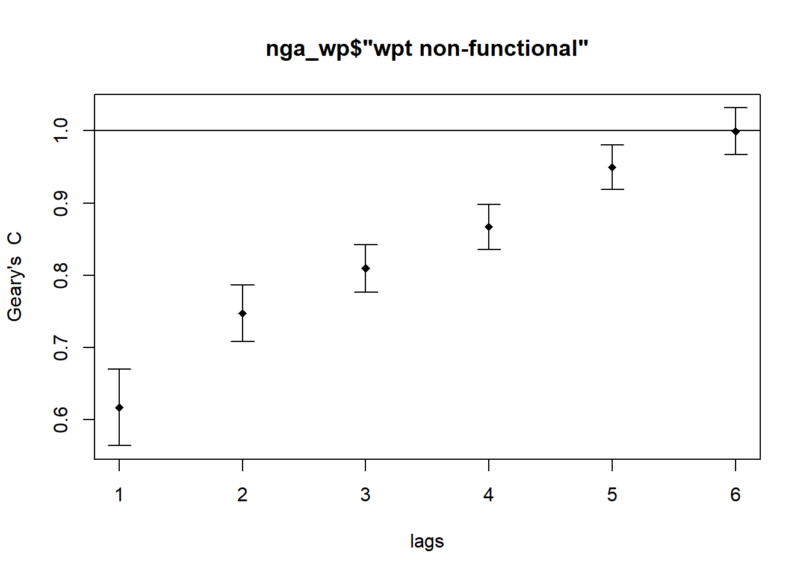
print(GC_corr_f)Spatial correlogram for nga_wp$"wpt functional"
method: Geary's C
estimate expectation variance standard deviate Pr(I) two sided
1 (773) 0.46247209 1.00000000 0.00127700 -15.0420 < 2.2e-16 ***
2 (773) 0.55716070 1.00000000 0.00084660 -15.2197 < 2.2e-16 ***
3 (773) 0.62832603 1.00000000 0.00065344 -14.5399 < 2.2e-16 ***
4 (773) 0.70783718 1.00000000 0.00063934 -11.5547 < 2.2e-16 ***
5 (773) 0.79087031 1.00000000 0.00067363 -8.0576 7.781e-16 ***
6 (773) 0.85959605 1.00000000 0.00077929 -5.0296 4.916e-07 ***
---
Signif. codes: 0 '***' 0.001 '**' 0.01 '*' 0.05 '.' 0.1 ' ' 1print(GC_corr_nf)Spatial correlogram for nga_wp$"wpt non-functional"
method: Geary's C
estimate expectation variance standard deviate Pr(I) two sided
1 (773) 0.61709078 1.00000000 0.00070149 -14.4573 < 2.2e-16 ***
2 (773) 0.74726091 1.00000000 0.00038571 -12.8689 < 2.2e-16 ***
3 (773) 0.80953972 1.00000000 0.00027325 -11.5219 < 2.2e-16 ***
4 (773) 0.86705201 1.00000000 0.00024463 -8.5002 < 2.2e-16 ***
5 (773) 0.94961811 1.00000000 0.00024087 -3.2462 0.001169 **
6 (773) 0.99919645 1.00000000 0.00026273 -0.0496 0.960462
---
Signif. codes: 0 '***' 0.001 '**' 0.01 '*' 0.05 '.' 0.1 ' ' 1Given that the results are statistically significant, this further proves that both functional and non-functional water points are not correlated as Moran’s I and Geary’s C measures are inversely related.
Cluster and Outlier Analysis
Computing Local Moran’s I
fips <- order(nga_wp$shapeName)
localMIf <- localmoran(nga_wp$'wpt functional', rswm_q)
head(localMIf) Ii E.Ii Var.Ii Z.Ii Pr(z != E(Ii))
1 0.43849688 -7.191834e-04 0.138521511 1.1801022 0.2379596
2 0.34159457 -2.904635e-04 0.074723729 1.2506933 0.2110464
3 0.69235062 -8.956670e-04 0.230277001 1.4446488 0.1485566
4 0.02080384 -3.884365e-04 0.042599612 0.1026774 0.9182190
5 0.30973779 -3.884365e-04 0.059795173 1.2682517 0.2047081
6 0.05824105 -4.231402e-05 0.004642162 0.8554300 0.3923132fips <- order(nga_wp$shapeName)
localMInf <- localmoran(nga_wp$'wpt non-functional', rswm_q)
head(localMInf) Ii E.Ii Var.Ii Z.Ii Pr(z != E(Ii))
1 -0.32365786 -9.995243e-04 1.924638e-01 -0.73547576 0.46204980
2 0.07000542 -4.092463e-05 1.053077e-02 0.68258288 0.49487045
3 1.25819985 -1.627684e-03 4.181728e-01 1.94819847 0.05139122
4 -0.03537489 -5.427505e-05 5.954304e-03 -0.45773361 0.64714384
5 0.01201533 -2.590965e-04 3.988998e-02 0.06145673 0.95099547
6 0.00768085 -1.538445e-07 1.687859e-05 1.86960486 0.06153871Mapping Local Moran’s I
nga_wp.localMIf <- cbind(nga_wp,localMIf) %>%
rename(Pr.Ii = Pr.z....E.Ii..)
tm_shape(nga_wp.localMIf) +
tm_fill(col = "Ii",
style = "pretty",
palette = "RdBu",
title = "functional wp local moran statistics") +
tm_borders(alpha = 0.5) +
tm_layout(legend.text.size = 0.5)Variable(s) "Ii" contains positive and negative values, so midpoint is set to 0. Set midpoint = NA to show the full spectrum of the color palette.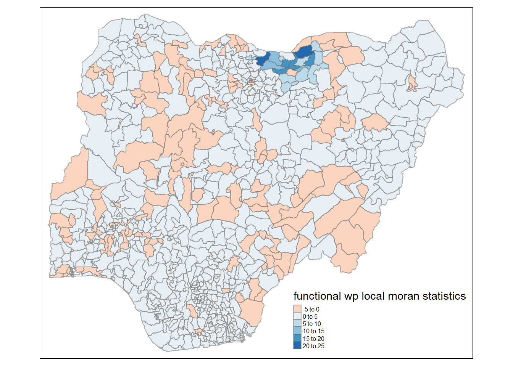
nga_wp.localMInf <- cbind(nga_wp,localMInf) %>%
rename(Pr.Ii = Pr.z....E.Ii..)
tm_shape(nga_wp.localMInf) +
tm_fill(col = "Ii",
style = "pretty",
palette = "RdBu",
title = "non-functional wp local moran statistics") +
tm_borders(alpha = 0.5) +
tm_layout(legend.text.size = 0.5)Variable(s) "Ii" contains positive and negative values, so midpoint is set to 0. Set midpoint = NA to show the full spectrum of the color palette.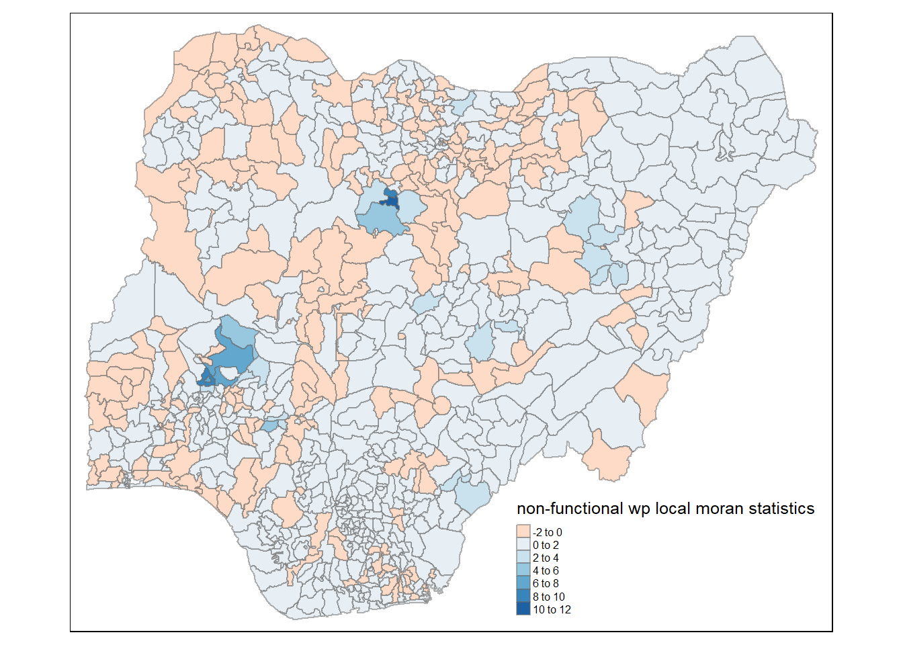
Mapping Local Moran’s I p-values
tm_shape(nga_wp.localMIf) +
tm_fill(col = "Pr.Ii",
breaks=c(-Inf, 0.001, 0.01, 0.05, 0.1, Inf),
palette="-Blues",
title = "functional wp local Moran's I p-values") +
tm_borders(alpha = 0.5)+
tm_layout(legend.text.size = 0.5)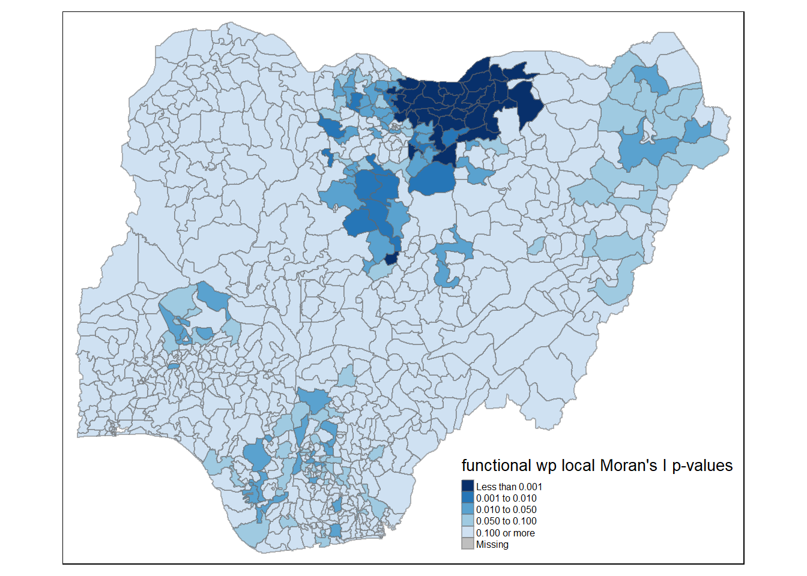
tm_shape(nga_wp.localMInf) +
tm_fill(col = "Pr.Ii",
breaks=c(-Inf, 0.001, 0.01, 0.05, 0.1, Inf),
palette="-Blues",
title = "non-functional wp local Moran's I p-values") +
tm_borders(alpha = 0.5)+
tm_layout(legend.text.size = 0.5)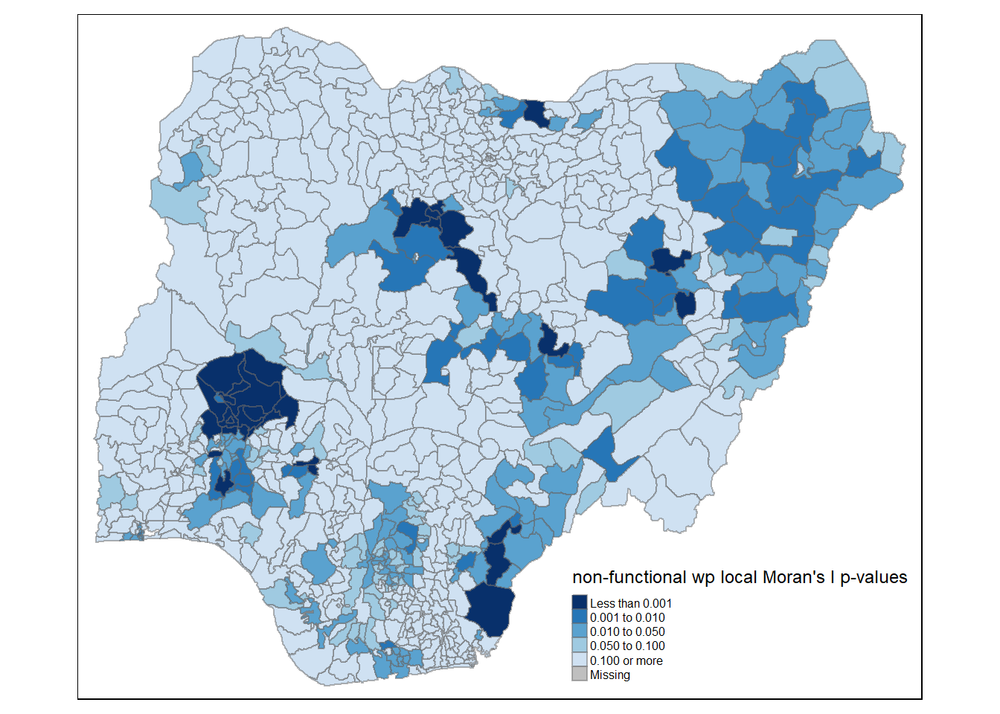
Mapping both local Moran’s I values and p-values
localMIf.map <- tm_shape(nga_wp.localMIf) +
tm_fill(col = "Ii",
style = "pretty",
title = "functional wp local moran statistics") +
tm_borders(alpha = 0.5) +
tm_layout(legend.text.size = 0.3, legend.title.size = 0.4)
localMInf.map <- tm_shape(nga_wp.localMInf) +
tm_fill(col = "Ii",
style = "pretty",
title = "non-functional wplocal moran statistics") +
tm_borders(alpha = 0.5) +
tm_layout(legend.text.size = 0.25, legend.title.size = 0.4)
pvaluef.map <- tm_shape(nga_wp.localMIf) +
tm_fill(col = "Pr.Ii",
breaks=c(-Inf, 0.001, 0.01, 0.05, 0.1, Inf),
palette="-Blues",
title = "functional wplocal Moran's I p-values") +
tm_borders(alpha = 0.5) +
tm_layout(legend.text.size = 0.3, legend.title.size = 0.4)
pvaluenf.map <- tm_shape(nga_wp.localMInf) +
tm_fill(col = "Pr.Ii",
breaks=c(-Inf, 0.001, 0.01, 0.05, 0.1, Inf),
palette="-Blues",
title = "non-functional wp local Moran's I p-values") +
tm_borders(alpha = 0.5) +
tm_layout(legend.text.size = 0.3, legend.title.size = 0.4)
tmap_arrange(localMIf.map, localMInf.map, pvaluef.map, pvaluenf.map, asp=1, ncol=2)Variable(s) "Ii" contains positive and negative values, so midpoint is set to 0. Set midpoint = NA to show the full spectrum of the color palette.
Variable(s) "Ii" contains positive and negative values, so midpoint is set to 0. Set midpoint = NA to show the full spectrum of the color palette.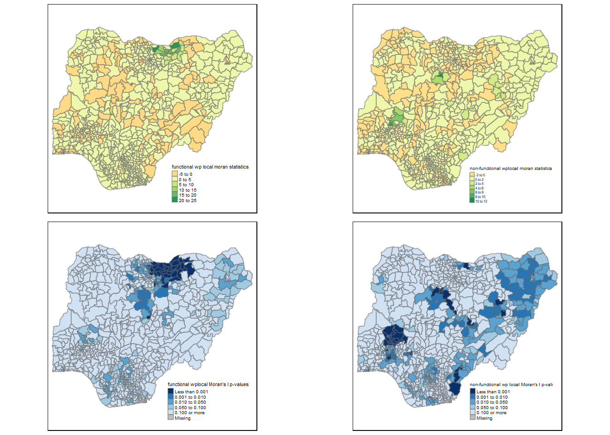
Portions indicated in darker green indicates that the functional and non-functional water points in Nigeria have similarly high and low attribute values accordingly.
LISA Cluster Map
Moran Scatterplot
nga_wp$fwpt <- scale(nga_wp$'wpt functional') %>%
as.vector
nci <- moran.plot(nga_wp$fwpt, rswm_q,
labels=as.character(nga_wp$shapeName),
xlab="wpt functional 2020",
ylab="Spatially Lag wpt functional 2020")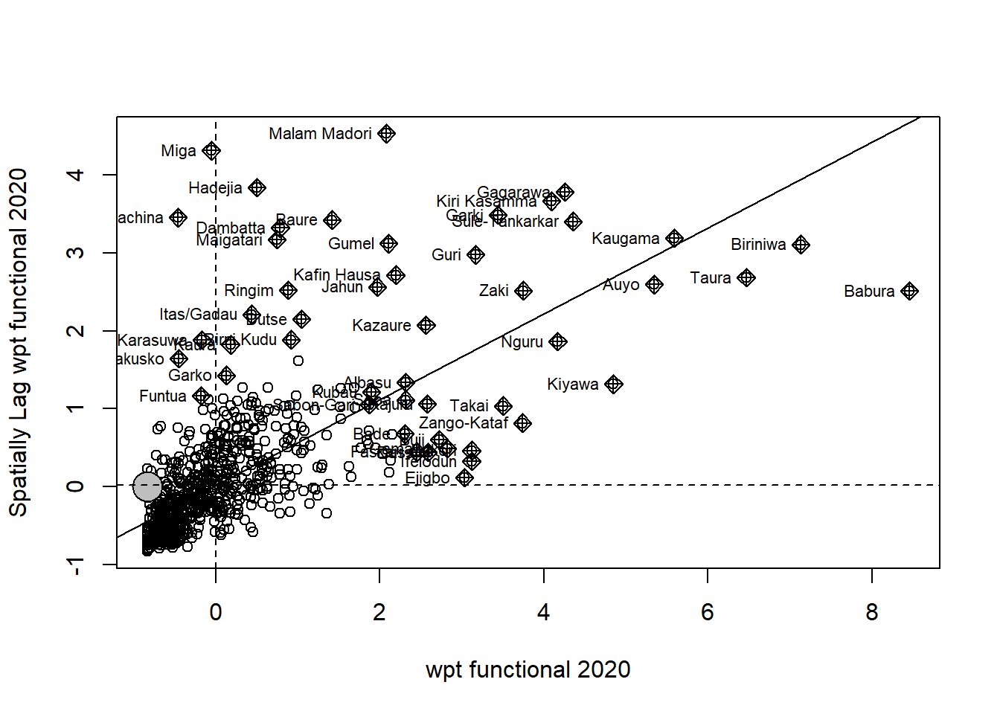
nga_wp$nfwpt <- scale(nga_wp$'wpt non-functional') %>%
as.vector
nci <- moran.plot(nga_wp$nfwpt, rswm_q,
labels=as.character(nga_wp$shapeName),
xlab="wpt non-functional 2020",
ylab="Spatially Lag wpt non-functional 2020")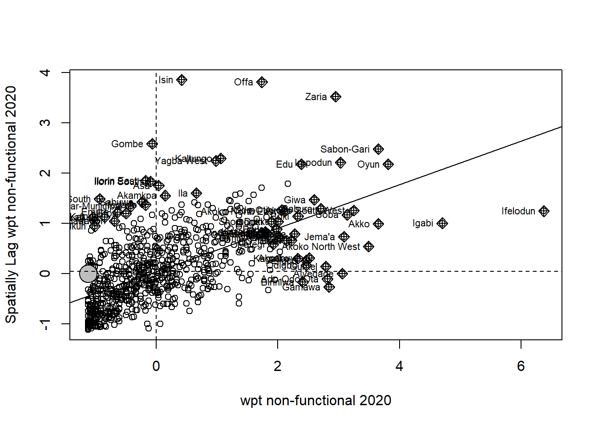
The above indicates the areas with higher and lower number of water points that are surrounded by average number of water points in Nigeria respectively.
Preparing LISA map classes
quadrantf <- vector(mode="numeric",length=nrow(localMIf))
nga_wp$lag_fwpt <- lag.listw(rswm_q, nga_wp$'wpt functional')
DV <- nga_wp$lag_fwpt - mean(nga_wp$lag_fwpt)
LM_If <- localMIf[,1]
signif <- 0.05
quadrantf[DV <0 & LM_If>0] <- 1
quadrantf[DV >0 & LM_If<0] <- 2
quadrantf[DV <0 & LM_If<0] <- 3
quadrantf[DV >0 & LM_If>0] <- 4
quadrantf[localMIf[,5]>signif] <- 0
quadrantnf <- vector(mode="numeric",length=nrow(localMInf))
nga_wp$lag_nfwpt <- lag.listw(rswm_q, nga_wp$'wpt non-functional')
DV <- nga_wp$lag_nfwpt - mean(nga_wp$lag_nfwpt)
LM_Inf <- localMInf[,1]
signif <- 0.05
quadrantnf[DV <0 & LM_Inf>0] <- 1
quadrantnf[DV >0 & LM_Inf<0] <- 2
quadrantnf[DV <0 & LM_Inf<0] <- 3
quadrantnf[DV >0 & LM_Inf>0] <- 4
quadrantnf[localMInf[,5]>signif] <- 0Plotting LISA map
nga_wp.localMIf$quadrantf <- quadrantf
colors <- c("#ffffff", "#2c7bb6", "#abd9e9", "#fdae61", "#d7191c")
clusters <- c("insignificant", "low-low", "low-high", "high-low", "high-high")
tm_shape(nga_wp.localMIf) +
tm_fill(col = "quadrantf",
style = "cat",
title = "functional wp quadrant",
palette = colors[c(sort(unique(quadrantf)))+1],
labels = clusters[c(sort(unique(quadrantf)))+1],
popup.vars = c("")) +
tm_view(set.zoom.limits = c(11,17)) +
tm_borders(alpha=0.5)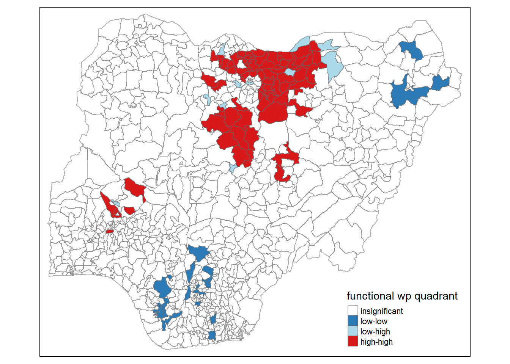
nga_wp.localMInf$quadrantnf <- quadrantnf
colors <- c("#ffffff", "#2c7bb6", "#abd9e9", "#fdae61", "#d7191c")
clusters <- c("insignificant", "low-low", "low-high", "high-low", "high-high")
tm_shape(nga_wp.localMInf) +
tm_fill(col = "quadrantnf",
style = "cat",
title = "non-functional wp quadrant",
palette = colors[c(sort(unique(quadrantnf)))+1],
labels = clusters[c(sort(unique(quadrantnf)))+1],
popup.vars = c("")) +
tm_view(set.zoom.limits = c(11,17)) +
tm_borders(alpha=0.5)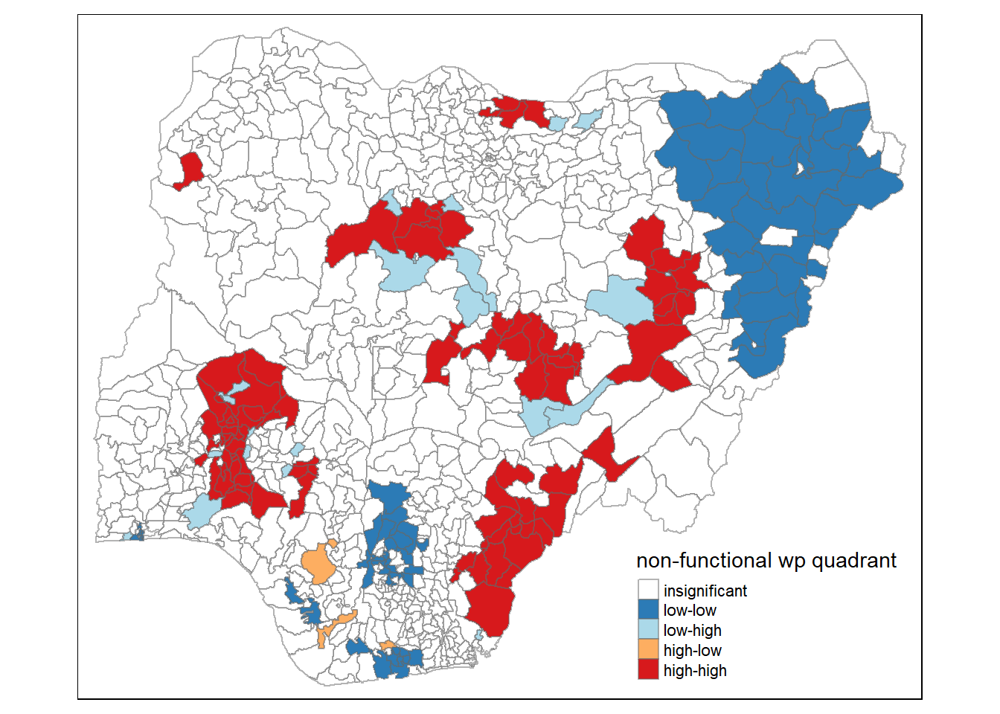
fwpt <- qtm(nga_wp, "wpt functional") +
tm_fill(title = "functional wpt") +
tm_layout(legend.text.size = 0.3, legend.title.size = 0.5)
nga_wp.localMIf$quadrantf <- quadrantf
colors <- c("#ffffff", "#2c7bb6", "#abd9e9", "#fdae61", "#d7191c")
clusters <- c("insignificant", "low-low", "low-high", "high-low", "high-high")
LISAmapf <- tm_shape(nga_wp.localMIf) +
tm_fill(col = "quadrantf",
style = "cat",
title = "functional wp quadrant",
palette = colors[c(sort(unique(quadrantf)))+1],
labels = clusters[c(sort(unique(quadrantf)))+1],
popup.vars = c("")) +
tm_view(set.zoom.limits = c(11,17)) +
tm_borders(alpha=0.5) +
tm_layout(legend.text.size = 0.3)
nfwpt <- qtm(nga_wp, "wpt non-functional") +
tm_fill(title = "non-functional wpt") +
tm_layout(legend.text.size = 0.25, legend.title.size = 0.4)
nga_wp.localMInf$quadrantnf <- quadrantnf
colors <- c("#ffffff", "#2c7bb6", "#abd9e9", "#fdae61", "#d7191c")
clusters <- c("insignificant", "low-low", "low-high", "high-low", "high-high")
LISAmapnf <- tm_shape(nga_wp.localMInf) +
tm_fill(col = "quadrantnf",
style = "cat",
title = "non-functional wp quadrant",
palette = colors[c(sort(unique(quadrantnf)))+1],
labels = clusters[c(sort(unique(quadrantnf)))+1],
popup.vars = c("")) +
tm_view(set.zoom.limits = c(11,17)) +
tm_borders(alpha=0.5) +
tm_layout(legend.text.size = 0.3)
tmap_arrange(fwpt, LISAmapf, nfwpt, LISAmapnf, asp=1, ncol=2)Warning: One tm layer group has duplicated layer types, which are omitted. To
draw multiple layers of the same type, use multiple layer groups (i.e. specify
tm_shape prior to each of them).
Warning: One tm layer group has duplicated layer types, which are omitted. To
draw multiple layers of the same type, use multiple layer groups (i.e. specify
tm_shape prior to each of them).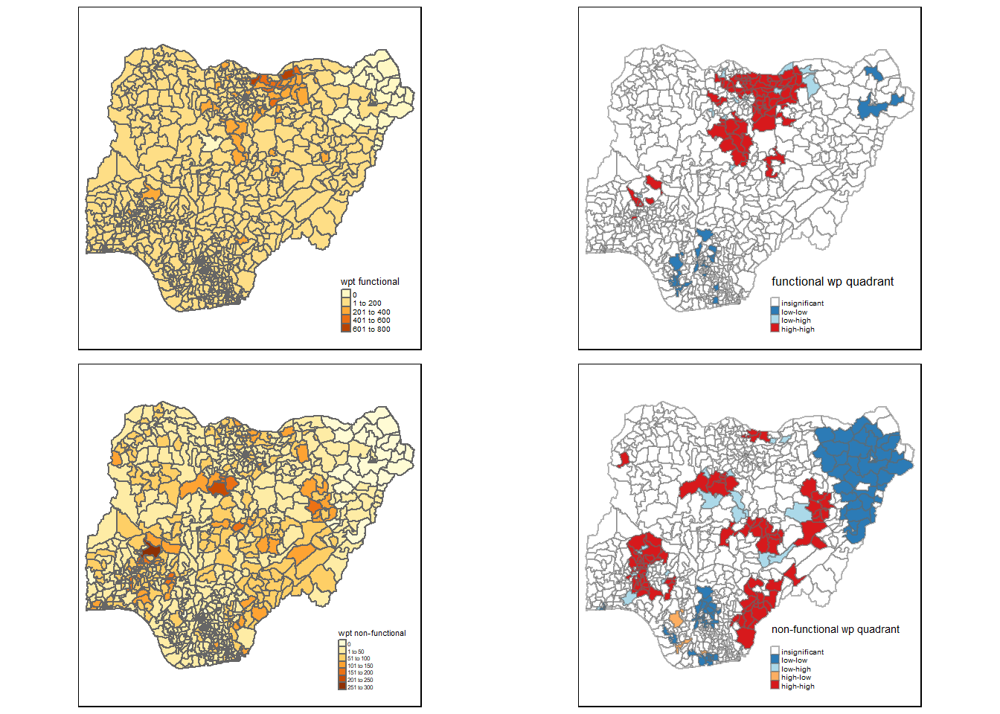
The LISA map indicates that the areas with functional water points strongly colored regions are therefore those that contribute significantly to a positive global spatial autocorrelation outcome, while paler colors contribute significantly to a negative autocorrelation outcome
Hot Spot and Cold Spot Area Analysis
Deriving Distance-Based Weight Matrix
Deriving the Centroid
longitude <- map_dbl(nga_wp$geometry, ~st_centroid(.x)[[1]])
latitude <- map_dbl(nga_wp$geometry, ~st_centroid(.x)[[2]])
coords <- cbind(longitude, latitude)Determine the Cut-Off Distance
k1 <- knn2nb(knearneigh(coords))
k1dists <- unlist(nbdists(k1, coords, longlat = TRUE))
summary(k1dists) Min. 1st Qu. Median Mean 3rd Qu. Max.
2.662 12.815 20.242 22.031 27.706 71.661 Computing Fixed Distance Weight Matrix
wm_d62 <- dnearneigh(coords, 0, 72, longlat = TRUE)
wm_d62Neighbour list object:
Number of regions: 774
Number of nonzero links: 18112
Percentage nonzero weights: 3.023323
Average number of links: 23.40052 wm62_lw <- nb2listw(wm_d62, style = 'B')
summary(wm62_lw)Characteristics of weights list object:
Neighbour list object:
Number of regions: 774
Number of nonzero links: 18112
Percentage nonzero weights: 3.023323
Average number of links: 23.40052
Link number distribution:
1 2 3 4 5 6 7 8 9 10 11 12 13 14 15 16 17 18 19 20 21 22 23 24 25 26
5 8 12 21 32 35 33 35 28 36 25 21 19 23 16 14 10 13 15 17 16 11 13 10 6 12
27 28 29 30 31 32 33 34 35 36 37 38 39 40 41 42 43 44 45 46 47 48 49 50 51 52
12 5 16 13 12 7 9 9 12 7 12 15 13 9 10 4 5 4 7 8 8 8 6 5 3 2
53 54 55 56 57 58 59 60 61 62 63 64 65 67 68 70
3 4 5 3 6 5 2 6 4 8 8 4 4 3 1 1
5 least connected regions:
90 112 123 237 670 with 1 link
1 most connected region:
585 with 70 links
Weights style: B
Weights constants summary:
n nn S0 S1 S2
B 774 599076 18112 36224 2614072Computing Adaptive Distance Weight Matrix
knn <- knn2nb(knearneigh(coords, k=30))
knn_lw <- nb2listw(knn, style = 'B')
summary(knn_lw)Characteristics of weights list object:
Neighbour list object:
Number of regions: 774
Number of nonzero links: 23220
Percentage nonzero weights: 3.875969
Average number of links: 30
Non-symmetric neighbours list
Link number distribution:
30
774
774 least connected regions:
1 2 3 4 5 6 7 8 9 10 11 12 13 14 15 16 17 18 19 20 21 22 23 24 25 26 27 28 29 30 31 32 33 34 35 36 37 38 39 40 41 42 43 44 45 46 47 48 49 50 51 52 53 54 55 56 57 58 59 60 61 62 63 64 65 66 67 68 69 70 71 72 73 74 75 76 77 78 79 80 81 82 83 84 85 86 87 88 89 90 91 92 93 94 95 96 97 98 99 100 101 102 103 104 105 106 107 108 109 110 111 112 113 114 115 116 117 118 119 120 121 122 123 124 125 126 127 128 129 130 131 132 133 134 135 136 137 138 139 140 141 142 143 144 145 146 147 148 149 150 151 152 153 154 155 156 157 158 159 160 161 162 163 164 165 166 167 168 169 170 171 172 173 174 175 176 177 178 179 180 181 182 183 184 185 186 187 188 189 190 191 192 193 194 195 196 197 198 199 200 201 202 203 204 205 206 207 208 209 210 211 212 213 214 215 216 217 218 219 220 221 222 223 224 225 226 227 228 229 230 231 232 233 234 235 236 237 238 239 240 241 242 243 244 245 246 247 248 249 250 251 252 253 254 255 256 257 258 259 260 261 262 263 264 265 266 267 268 269 270 271 272 273 274 275 276 277 278 279 280 281 282 283 284 285 286 287 288 289 290 291 292 293 294 295 296 297 298 299 300 301 302 303 304 305 306 307 308 309 310 311 312 313 314 315 316 317 318 319 320 321 322 323 324 325 326 327 328 329 330 331 332 333 334 335 336 337 338 339 340 341 342 343 344 345 346 347 348 349 350 351 352 353 354 355 356 357 358 359 360 361 362 363 364 365 366 367 368 369 370 371 372 373 374 375 376 377 378 379 380 381 382 383 384 385 386 387 388 389 390 391 392 393 394 395 396 397 398 399 400 401 402 403 404 405 406 407 408 409 410 411 412 413 414 415 416 417 418 419 420 421 422 423 424 425 426 427 428 429 430 431 432 433 434 435 436 437 438 439 440 441 442 443 444 445 446 447 448 449 450 451 452 453 454 455 456 457 458 459 460 461 462 463 464 465 466 467 468 469 470 471 472 473 474 475 476 477 478 479 480 481 482 483 484 485 486 487 488 489 490 491 492 493 494 495 496 497 498 499 500 501 502 503 504 505 506 507 508 509 510 511 512 513 514 515 516 517 518 519 520 521 522 523 524 525 526 527 528 529 530 531 532 533 534 535 536 537 538 539 540 541 542 543 544 545 546 547 548 549 550 551 552 553 554 555 556 557 558 559 560 561 562 563 564 565 566 567 568 569 570 571 572 573 574 575 576 577 578 579 580 581 582 583 584 585 586 587 588 589 590 591 592 593 594 595 596 597 598 599 600 601 602 603 604 605 606 607 608 609 610 611 612 613 614 615 616 617 618 619 620 621 622 623 624 625 626 627 628 629 630 631 632 633 634 635 636 637 638 639 640 641 642 643 644 645 646 647 648 649 650 651 652 653 654 655 656 657 658 659 660 661 662 663 664 665 666 667 668 669 670 671 672 673 674 675 676 677 678 679 680 681 682 683 684 685 686 687 688 689 690 691 692 693 694 695 696 697 698 699 700 701 702 703 704 705 706 707 708 709 710 711 712 713 714 715 716 717 718 719 720 721 722 723 724 725 726 727 728 729 730 731 732 733 734 735 736 737 738 739 740 741 742 743 744 745 746 747 748 749 750 751 752 753 754 755 756 757 758 759 760 761 762 763 764 765 766 767 768 769 770 771 772 773 774 with 30 links
774 most connected regions:
1 2 3 4 5 6 7 8 9 10 11 12 13 14 15 16 17 18 19 20 21 22 23 24 25 26 27 28 29 30 31 32 33 34 35 36 37 38 39 40 41 42 43 44 45 46 47 48 49 50 51 52 53 54 55 56 57 58 59 60 61 62 63 64 65 66 67 68 69 70 71 72 73 74 75 76 77 78 79 80 81 82 83 84 85 86 87 88 89 90 91 92 93 94 95 96 97 98 99 100 101 102 103 104 105 106 107 108 109 110 111 112 113 114 115 116 117 118 119 120 121 122 123 124 125 126 127 128 129 130 131 132 133 134 135 136 137 138 139 140 141 142 143 144 145 146 147 148 149 150 151 152 153 154 155 156 157 158 159 160 161 162 163 164 165 166 167 168 169 170 171 172 173 174 175 176 177 178 179 180 181 182 183 184 185 186 187 188 189 190 191 192 193 194 195 196 197 198 199 200 201 202 203 204 205 206 207 208 209 210 211 212 213 214 215 216 217 218 219 220 221 222 223 224 225 226 227 228 229 230 231 232 233 234 235 236 237 238 239 240 241 242 243 244 245 246 247 248 249 250 251 252 253 254 255 256 257 258 259 260 261 262 263 264 265 266 267 268 269 270 271 272 273 274 275 276 277 278 279 280 281 282 283 284 285 286 287 288 289 290 291 292 293 294 295 296 297 298 299 300 301 302 303 304 305 306 307 308 309 310 311 312 313 314 315 316 317 318 319 320 321 322 323 324 325 326 327 328 329 330 331 332 333 334 335 336 337 338 339 340 341 342 343 344 345 346 347 348 349 350 351 352 353 354 355 356 357 358 359 360 361 362 363 364 365 366 367 368 369 370 371 372 373 374 375 376 377 378 379 380 381 382 383 384 385 386 387 388 389 390 391 392 393 394 395 396 397 398 399 400 401 402 403 404 405 406 407 408 409 410 411 412 413 414 415 416 417 418 419 420 421 422 423 424 425 426 427 428 429 430 431 432 433 434 435 436 437 438 439 440 441 442 443 444 445 446 447 448 449 450 451 452 453 454 455 456 457 458 459 460 461 462 463 464 465 466 467 468 469 470 471 472 473 474 475 476 477 478 479 480 481 482 483 484 485 486 487 488 489 490 491 492 493 494 495 496 497 498 499 500 501 502 503 504 505 506 507 508 509 510 511 512 513 514 515 516 517 518 519 520 521 522 523 524 525 526 527 528 529 530 531 532 533 534 535 536 537 538 539 540 541 542 543 544 545 546 547 548 549 550 551 552 553 554 555 556 557 558 559 560 561 562 563 564 565 566 567 568 569 570 571 572 573 574 575 576 577 578 579 580 581 582 583 584 585 586 587 588 589 590 591 592 593 594 595 596 597 598 599 600 601 602 603 604 605 606 607 608 609 610 611 612 613 614 615 616 617 618 619 620 621 622 623 624 625 626 627 628 629 630 631 632 633 634 635 636 637 638 639 640 641 642 643 644 645 646 647 648 649 650 651 652 653 654 655 656 657 658 659 660 661 662 663 664 665 666 667 668 669 670 671 672 673 674 675 676 677 678 679 680 681 682 683 684 685 686 687 688 689 690 691 692 693 694 695 696 697 698 699 700 701 702 703 704 705 706 707 708 709 710 711 712 713 714 715 716 717 718 719 720 721 722 723 724 725 726 727 728 729 730 731 732 733 734 735 736 737 738 739 740 741 742 743 744 745 746 747 748 749 750 751 752 753 754 755 756 757 758 759 760 761 762 763 764 765 766 767 768 769 770 771 772 773 774 with 30 links
Weights style: B
Weights constants summary:
n nn S0 S1 S2
B 774 599076 23220 41936 2832604Computing Gi Statistics
Gi Statistics Using Fixed Distance
fips <- order(nga_wp$shapeName)
gi.fixedf <- localG(nga_wp$'wpt functional', wm62_lw)
gi.fixedf [1] -4.796625452 -4.760127962 -1.178785579 -0.326632935 -4.719062957
[6] 1.517212583 -1.636993159 -1.695772874 -0.403511962 -5.123902136
[11] -2.471730819 -0.360194196 -1.160778305 -1.048919594 -2.076653373
[16] -0.319638712 0.024689628 -1.279528653 -2.184358587 0.671272845
[21] -1.467560160 -2.129890631 -5.395088806 -0.580180689 -5.492909851
[26] -2.856737649 -2.398488558 0.047876305 0.553566085 -0.678752505
[31] -1.789058701 -1.699530361 7.316382777 -0.942117552 -0.276601541
[36] 0.968416640 -1.200000231 -1.215937811 -1.250145921 -0.936269120
[41] -0.910234791 -2.557053584 -2.572245517 -0.245002701 -0.469438413
[46] 0.825048029 5.756223602 -0.421474825 -2.324341929 0.510629133
[51] -1.821113251 -5.020218376 -4.343323299 -5.375838607 -3.325401823
[56] -2.969247964 -3.970558940 -4.171384714 0.537673286 -2.373367425
[61] -1.782872370 -1.690458718 0.473188658 0.020869639 -0.415531935
[66] -3.067787075 2.008512181 -3.388560862 -2.035881783 0.530433344
[71] 0.914653521 0.353267344 -0.067751286 -0.717387481 11.826518178
[76] 0.262941721 -3.986267972 -5.146568258 -5.390420086 -4.411184786
[81] 7.785389163 -1.870888986 2.675295892 -0.649933863 3.530210517
[86] -2.247765303 1.959302045 -0.015345175 -0.416836823 0.454287567
[91] -1.444648763 0.405372773 -0.527594795 -1.272494469 2.337994156
[96] 3.059431706 2.564387687 1.378633502 6.979930628 0.001564852
[101] 3.806723860 1.323933872 -3.925948341 -1.551585805 4.530615529
[106] 0.622169130 1.408970398 3.516041825 -1.068989857 9.734034046
[111] 6.482245919 -0.708388269 -0.283322572 1.623796935 -1.411235908
[116] -1.019433470 2.652150834 -0.026674040 1.210758111 1.020998329
[121] -2.973029029 -3.232857918 -0.041267240 1.211942987 -0.136961972
[126] -1.440738782 5.578596661 0.064853642 0.895275119 4.981130457
[131] -0.411512020 0.325452007 0.172847407 -2.700297960 -0.112748651
[136] -2.858250519 -2.838335027 -0.031623823 3.140725380 -1.193741467
[141] 0.522647406 4.508306655 -1.154123902 0.704778882 7.244848174
[146] -1.322736593 3.838917300 -0.586271732 2.749348898 -1.062816081
[151] 3.437193610 -0.281080288 1.432006743 3.624933666 5.219108034
[156] 4.356464086 -3.061522216 -1.737462126 -1.433320898 -1.867460383
[161] 2.021045256 -1.079001217 0.339194758 -0.447683844 -5.194088009
[166] 7.760826012 3.612672340 2.401521545 -3.932711535 0.664912955
[171] 1.512273278 0.938478908 0.877369107 2.049958651 0.162107516
[176] -0.780169159 -1.776622291 -0.232742053 1.177679490 -1.958249110
[181] -5.336864791 0.487651859 -2.222023494 -3.701647793 -0.049111229
[186] -1.027213498 -0.293338282 -0.018656587 -5.109795341 -3.712594415
[191] -3.370303729 -0.849767871 -2.131616581 -2.627586230 -2.918359053
[196] -2.274341511 -2.736576378 -2.864461007 -3.383692993 -2.557124598
[201] -1.333668024 -3.391773644 -4.825810986 -4.606650954 -3.175497220
[206] -2.867346895 -1.804087100 -4.739652812 -4.267580760 -2.738349519
[211] -2.347372314 -2.345152724 0.817512757 -2.038318349 -4.763993663
[216] -5.268924373 -0.533951036 -0.772989095 4.557586316 -0.694389743
[221] 1.278381807 -0.756156627 -1.656765229 -1.005568662 -0.896133518
[226] 2.809332022 8.354696578 -0.758299913 11.681333158 3.960443970
[231] 1.395070355 -0.913989702 9.627442737 4.464755359 3.564663269
[236] -1.019280116 1.193759164 7.337585009 0.658425019 0.197956077
[241] -1.180478137 6.575205038 2.118679253 -1.651707593 3.025034229
[246] -3.753207455 1.048332054 -1.377765271 -0.894505578 -1.828697041
[251] -0.796121151 -0.988626661 -0.858111837 -0.663893717 12.608127293
[256] -0.771550024 -0.597118254 9.121334761 1.119804276 -0.288001999
[261] -2.047033493 -1.172374899 -0.501966928 4.111155011 -0.716706941
[266] 2.382601004 3.193389546 0.362312513 -0.959050742 5.031261684
[271] -1.337552563 11.576955247 -1.028792533 -1.787378470 -0.470180105
[276] -0.502208652 -0.652681839 -0.853539673 -0.956358177 -3.261683102
[281] -0.967771709 -1.226585251 -0.811129233 -2.058593671 -3.210784851
[286] -4.155345305 0.083233454 -4.196967277 -2.319192417 -0.879575112
[291] -5.254437866 -5.233489238 -5.022486870 -4.990068236 -1.191126097
[296] 0.130496233 -2.086680957 0.995783450 0.866892685 0.184191908
[301] 0.086049850 0.910955413 -0.507539834 0.555528771 1.139116792
[306] -2.141361286 2.187696902 -2.716023426 -3.145170658 -2.768852333
[311] -3.086853736 -2.767284563 -5.074599898 -5.192175741 -1.210258524
[316] -1.061349688 -1.335899179 -1.918120770 0.049399810 -0.831074214
[321] -4.681728334 -3.450328584 -3.254580827 2.890974503 -5.162884377
[326] -1.924517173 -2.401959634 -0.270685936 -0.582886865 1.123837553
[331] -4.543179697 -2.211761815 -4.193800219 -4.437604156 -2.454835521
[336] -4.018574657 0.608915921 -4.859336908 1.424289319 -1.171354641
[341] 0.150724307 0.455738714 0.901511376 1.019687962 -1.060399635
[346] 2.255010806 1.391019329 1.495476178 -0.075388339 4.187221209
[351] -3.851821661 -1.749320356 -1.410399401 -0.021632801 0.930382428
[356] 1.365480441 -0.018931327 0.005817083 -0.168563045 -0.485986137
[361] -0.484249142 -1.417805617 -1.515965814 -4.914104859 -5.213675809
[366] -5.590074894 0.881763487 -4.710816211 -0.173435639 -2.930649869
[371] -2.938433264 -5.257577674 7.023817384 -0.271167944 -4.007786754
[376] -3.560458147 -0.545226216 0.348443768 1.393525041 2.228234375
[381] -1.212173377 10.838099292 4.371615765 0.358111148 4.909400053
[386] -0.394511268 1.699144153 -1.332539251 2.905992646 1.367938928
[391] 1.320968959 1.551561688 -1.048588108 3.837240499 1.584691637
[396] 1.115839697 0.639524891 11.470507367 3.421581590 -1.618267467
[401] 0.213636057 -0.459527822 1.705318137 -0.705319616 3.071688138
[406] -1.444648763 -0.078634839 0.098406863 1.537395142 2.804091023
[411] 2.309925920 3.427154442 3.965427065 3.952811115 3.072023737
[416] 0.726832712 0.132805960 3.570025169 0.941352179 2.711444669
[421] -0.316905589 11.233904555 1.683157859 0.728690673 2.651708893
[426] 5.772870369 0.160263416 -0.523765424 0.423539121 -4.036772436
[431] 4.170377169 0.108858481 10.668447414 2.636073077 7.034217507
[436] -0.281880919 -0.840855141 0.517222625 -2.892012170 -0.964731329
[441] 0.913504498 -0.543487200 -1.904511471 2.394610100 3.031288248
[446] -0.340552895 -1.444648763 4.113454879 5.633695682 4.386881730
[451] 3.020799932 0.273621954 3.934527167 -0.691096555 0.017396541
[456] 0.009168543 -1.351386142 -0.445626339 0.158640466 -0.124417745
[461] -1.905751410 -1.912332128 0.116134126 1.290096633 0.902548864
[466] -0.669277435 -0.217957776 1.091254914 3.348737032 -0.114691377
[471] -0.856100785 9.760066190 -1.396983244 3.471012235 -1.439260520
[476] -0.752254689 -0.964492350 3.133094811 -1.393075179 11.948654838
[481] -1.501515087 -0.409336688 6.072071581 -0.965177123 12.913447102
[486] 3.233374934 1.180539651 3.671335818 0.461306989 -0.093857516
[491] 3.206315280 -1.669220966 -0.413175040 -0.273174855 2.652771439
[496] 3.391949313 -1.217187644 -5.280562950 -2.913323179 -1.869068047
[501] 12.382938357 1.680179622 6.564044722 0.576123433 -4.314693740
[506] 0.629795831 -1.178785579 1.492122521 -2.047033493 -0.082337499
[511] 1.554329806 -1.728352594 -1.518590300 3.316965071 -1.804856692
[516] -0.583244682 -0.906380264 0.450314370 5.381473154 -0.667446407
[521] 0.422279063 -4.302374032 -3.771714953 -2.380037977 -1.669220966
[526] -1.415829273 -0.641250019 -4.851016718 6.211651959 3.938191286
[531] -5.195686970 -5.139598941 -1.756215464 -2.882285526 -5.245338863
[536] -5.071953823 -5.286543500 -3.716139511 -4.328454710 -3.854149448
[541] -3.027582794 -0.284900738 -5.395088806 -2.249736287 0.133247051
[546] 0.073992826 0.217852297 -4.874333782 -3.753213232 0.985441134
[551] -4.718481286 -5.211656303 0.950499332 0.517108316 -1.869664783
[556] -1.146531548 1.117959037 -2.271157832 -3.543739104 1.681084059
[561] -2.310126370 -3.937355743 -2.316417257 -4.916239685 -2.772400468
[566] 1.236671591 1.267611661 0.828620928 1.205216927 -1.071737798
[571] -3.497359599 -1.215096208 -4.903159741 -2.348748787 -4.806522801
[576] -1.938484036 -0.072570764 -1.535446830 -4.981964770 -1.613906573
[581] 0.147102299 0.364812306 -0.928180477 -1.247173587 -5.238629947
[586] -1.222164805 -3.417372903 -3.080764397 -1.281221193 -3.616303055
[591] 0.747655733 -2.695619973 1.372386391 0.256835839 -1.464872920
[596] -1.138292853 -4.632880375 -0.547087849 -0.170421337 -0.364653986
[601] -1.539901265 -5.041257274 -4.949977276 -3.919692587 -3.633383487
[606] -2.015060482 -0.053057022 -3.058184167 0.843561948 -0.044771673
[611] -5.286374412 1.448806166 -3.093782525 -5.184191438 -5.103751262
[616] -5.056914979 -4.580323409 -5.395336072 -5.211957343 -1.030740355
[621] -4.442438142 -4.891078483 -1.905089871 -4.848541421 1.063327170
[626] -0.933521080 -1.725757299 -1.578334320 -1.334625788 -1.373906347
[631] -4.946643305 -4.880382733 -4.704975190 -0.650212735 -0.426436675
[636] -5.130487789 -4.203410114 0.195737329 0.119850186 1.479392840
[641] -0.635906805 1.909771456 -3.044687684 0.353207517 -3.829186494
[646] 0.418824207 0.898803860 -0.906961587 0.028979705 4.388939152
[651] -2.134547844 -0.456914208 3.153506676 3.576618272 9.930828226
[656] 1.695982298 3.056510198 5.529311522 2.516549120 -0.337972241
[661] 2.646170360 1.997954458 -3.166389295 0.022313786 -0.419392738
[666] -0.342921112 5.299017107 1.625515929 -2.674159065 0.130543877
[671] -2.136536281 -0.887675659 -0.563561615 0.063096291 3.823165614
[676] -1.778390673 0.627332458 -0.201908284 3.900410812 -0.347418483
[681] 0.942563138 -1.826892675 -1.112467595 2.186997876 -1.245330711
[686] -1.190044003 -1.891662435 -2.105935630 10.350787059 -0.337105364
[691] 3.598497939 -0.491822793 -1.901093612 1.200709980 -0.432468898
[696] 2.497383872 -3.932329218 5.221825815 -0.308320259 -0.314178162
[701] -0.473236569 -0.962888102 4.406659616 -0.360587467 -0.634760959
[706] 12.532990190 3.923729833 1.181451124 -0.450717965 -0.418407023
[711] 1.460055636 4.204376179 4.122884460 -0.521867733 -2.532490578
[716] -3.992227392 -3.083281004 -2.932672169 -3.223978470 -3.183501018
[721] -4.717349805 -2.466711855 -4.471958981 0.099389149 -4.700632055
[726] -4.432996943 -3.504302818 -4.642299957 -4.873111351 -4.984575890
[731] 5.714913828 -5.377716835 -3.806473939 -3.248909650 0.254710871
[736] -0.108873831 -3.135488840 -4.259266866 -3.622987073 0.614108705
[741] -1.157639496 1.254706976 5.595439342 1.987261504 -2.120742126
[746] -2.692078268 -2.540128344 -0.174533571 0.590994961 4.932692386
[751] -0.551209120 -1.015083034 0.695728059 -0.867531486 0.033480721
[756] 0.332591811 -0.365589801 1.445315978 0.422824450 5.204034617
[761] -0.382892599 -2.585082666 -2.027483188 -2.101871154 -0.206151257
[766] -0.488255728 3.645713886 6.548154322 4.889046907 1.668672912
[771] 1.937819738 -0.855511005 0.667817716 0.003316460
attr(,"cluster")
[1] Low Low Low Low Low High Low High High Low Low Low Low Low High
[16] High Low High Low Low Low Low Low Low Low Low Low High High High
[31] Low Low High Low High High Low High High Low High Low Low Low Low
[46] High High Low High High Low Low Low Low Low Low Low Low Low Low
[61] Low Low High Low High Low High Low Low High High Low Low Low High
[76] Low Low Low Low Low High High High High High Low High High High High
[91] Low High High Low Low High High High High Low High Low Low Low High
[106] High High High Low High High Low High High High Low High High High Low
[121] Low Low High High High Low High Low Low High High High High Low Low
[136] Low Low Low High Low Low High Low Low High Low Low Low High Low
[151] Low Low High Low High High Low Low Low Low Low Low High Low Low
[166] High Low High Low High High High High High Low Low Low Low High Low
[181] Low High Low Low High Low Low High Low Low Low Low Low Low Low
[196] High Low Low Low Low Low Low Low Low Low Low Low Low Low Low
[211] Low Low Low Low Low Low High High Low Low High Low Low High Low
[226] Low High Low High High High Low High High High High High High High High
[241] Low High High Low High Low Low Low Low Low Low Low Low Low High
[256] Low Low High Low Low Low Low Low High High High Low Low Low High
[271] Low High Low Low Low High Low Low High Low High Low High Low Low
[286] Low Low Low Low Low Low Low Low Low Low Low Low Low High Low
[301] High Low Low High Low Low High Low Low Low Low Low Low Low Low
[316] Low Low Low Low Low Low Low Low High Low Low Low Low Low Low
[331] Low High Low Low Low Low High Low High Low Low Low Low Low Low
[346] High Low High Low High Low Low Low Low High Low Low Low Low Low
[361] Low High Low Low Low Low High Low Low Low Low Low High Low Low
[376] Low High High High Low Low High Low Low High High High High Low Low
[391] Low Low Low Low High Low High High High Low Low High High High High
[406] Low Low High High High High High High Low Low Low High High Low High
[421] Low High High High High High Low Low Low Low High Low High High High
[436] Low Low Low Low Low High Low Low High Low Low Low Low High High
[451] High High High High Low Low High Low High Low Low Low Low High Low
[466] High High Low High Low Low Low Low High Low Low Low High High High
[481] Low Low High Low High High High High Low Low High Low High Low Low
[496] High Low Low Low Low Low High High High Low Low Low High Low Low
[511] High Low Low High Low Low High Low Low High High Low Low Low Low
[526] Low Low Low High High Low Low Low Low Low Low Low Low Low Low
[541] Low Low Low Low Low High Low Low High High Low Low High High Low
[556] Low High Low Low High Low Low Low Low Low High Low High High Low
[571] Low Low Low Low High High High Low Low Low High High Low Low Low
[586] Low Low Low Low Low High Low High Low Low Low Low Low Low Low
[601] High Low Low Low Low Low Low Low High High Low Low Low Low Low
[616] Low Low Low Low Low Low Low Low Low High Low Low Low Low Low
[631] Low Low Low High Low Low Low Low Low High Low High Low High High
[646] Low High Low High High Low Low Low High High High High High High Low
[661] Low High Low High Low Low Low High Low Low Low Low Low Low Low
[676] Low High High High High High Low Low High Low Low Low Low High Low
[691] High Low Low High Low High Low High High High Low Low Low High Low
[706] High High High High Low High High High Low Low Low Low Low Low Low
[721] Low Low Low Low Low Low Low Low Low Low High Low Low Low Low
[736] High Low Low Low Low Low Low High High Low Low Low High Low High
[751] High Low High Low Low Low High High High High Low Low Low Low High
[766] Low Low High High High High High High Low
Levels: Low High
attr(,"gstari")
[1] FALSE
attr(,"call")
localG(x = nga_wp$"wpt functional", listw = wm62_lw)
attr(,"class")
[1] "localG"gi.fixednf <- localG(nga_wp$'wpt non-functional', wm62_lw)
gi.fixednf [1] -3.4117746649 -3.4325327295 -1.5896654726 0.1024035837 -1.4372020951
[6] 2.8392431096 -1.2451608781 -2.0881598529 0.6943166939 -4.0181176937
[11] -3.5543643584 0.7028327021 1.0557642518 -1.2648020444 -3.1100102991
[16] 4.4236791649 0.7253370351 -0.1170313444 -0.8468860707 0.1418378466
[21] -0.4444525907 -2.5787439152 -5.9408386919 0.0490221299 -4.6250101263
[26] -3.4526479798 -3.2842327545 2.6307586789 3.1531206419 3.9017827701
[31] -0.3901172116 -2.0709442943 -0.1348087246 2.5315321685 0.5142842691
[36] 2.8157847314 2.0572944746 2.3429395384 2.1827306253 1.9238345799
[41] 2.1897325824 -0.3645157327 -3.8639919963 4.5399631849 4.3061500016
[46] 2.9608766578 -0.2864102817 1.1746065746 -2.8181694612 3.0318488026
[51] -2.3715234853 -5.9628191057 -4.8665465676 -5.9978486948 -2.1521995859
[56] -2.6990377972 -4.0738422433 -4.2582561763 0.1434597247 -1.4480552039
[61] -0.3664736626 -2.0660238126 1.3560050446 1.1941723552 0.6520255991
[66] -0.7061126715 5.3395987192 -3.9654078235 -2.8742418968 4.4607142525
[71] 6.0841484326 0.2440050847 -0.0717557313 -0.2146512615 1.2805963197
[76] 2.5430378175 -4.3209911455 -6.1864779959 -6.3091804665 -5.2074212405
[81] 1.5724065864 -3.0134148246 -1.6605766843 2.1372905711 -1.9370094219
[86] 0.5351722462 0.7781339095 -0.0991617191 -0.2983694288 1.6845537280
[91] -1.9481984678 2.4106784274 -0.1209884988 -0.0294216102 1.2014584129
[96] 0.5487724545 0.5230691396 -1.0049421880 2.2086577453 0.6860104564
[101] -0.8358802808 3.3934885075 -2.5915246147 0.7361865356 -1.3919152488
[106] 1.6857908883 3.3349825302 1.4948688424 -0.6649376028 0.1049808942
[111] 0.1797402897 -0.2296312591 1.5924606930 -0.4220300892 -2.4843821512
[116] -0.5403453732 2.4425124231 3.1901956500 3.7026209747 5.7708188247
[121] -2.9992528883 -2.8867680713 0.1450845287 5.6210067488 0.1300463875
[126] -1.4642795114 -0.1821964578 0.2019905157 -0.3933126058 -1.0687092481
[131] 1.1862683742 -1.2897330306 2.0774178384 -2.7261489805 1.1595913792
[136] 0.0590529868 0.0415312576 -0.1479027888 0.2286220369 -1.8068739793
[141] 1.8128875616 -1.8465165657 -1.9263347704 -0.1217435299 0.1562862363
[146] -2.0483697898 -0.1728823598 1.1206769217 2.2828808379 -1.2897776976
[151] 2.4167160591 0.3088772578 -0.1569586843 1.5067812784 -1.4232058416
[156] -1.3192224285 -3.7789524190 -0.8757699225 -1.6603243945 -2.5183861649
[161] 0.0497131757 0.5395983509 2.4584177542 1.7817721289 -5.8940988934
[166] 0.5616363675 1.6014174947 -0.7737526146 -1.8608470741 1.2807175799
[171] 1.8546118600 5.6507070121 4.9899574161 3.8565952505 5.4648235612
[176] -0.6763153032 -2.1820247405 1.1201091686 5.1137113602 -1.0998628514
[181] -4.9652045029 3.5387758960 -2.3886751887 -0.4653196107 4.1348276862
[186] 3.5932572298 3.8543059497 5.2228382133 -5.6296206205 -2.9973115744
[191] -3.9852174640 3.2727422969 -2.4310631930 -3.0070376123 -3.2384084218
[196] -3.0486056593 -2.0595597139 -2.5844113063 -3.5641507085 -1.7577329410
[201] 0.3786055236 -0.5079560968 -1.9294510731 -3.7986404726 -2.7848792901
[206] -2.5102897931 -1.9939528637 -2.3691669213 -0.9886885003 -2.0151263289
[211] -0.9581884502 -0.5086561528 3.7754185180 -2.4231288260 -5.6010575750
[216] -4.0749852290 0.3576511087 0.2927426140 -1.6443111430 0.8302229411
[221] -0.5062515700 -0.1547202287 -2.4843821512 1.0086589118 -2.1770380403
[226] 2.4626146208 0.0440638219 0.1920286012 1.3983932449 -0.8496076016
[231] -0.6691384516 -1.2911170263 1.5345894073 -0.5529326952 -1.5457781106
[236] -1.0324483227 1.1200463362 -0.0620637069 0.4247713032 2.0054718680
[241] -1.8702382558 -1.1521974135 -0.2921554734 -2.4950665627 3.5976949011
[246] -2.7962939270 4.8434048492 -2.5148770948 -1.1267981706 -2.4941996452
[251] -0.2630217751 -2.1970004876 -0.7730147072 0.6798537235 1.2492399224
[256] -0.6888953395 0.8358603199 1.6654804315 -0.4827650151 -0.5433051006
[261] -2.7605516416 -0.8707537202 0.0947302301 -2.0368588754 0.0696307201
[266] -0.6203604939 -2.3237912877 0.3598097208 0.3526946680 1.4430576168
[271] -1.8702382558 -0.1272890978 -2.2962397403 -2.7219828700 0.2521141177
[276] 0.2110907859 -0.0140816269 -0.4035735646 -0.1936101468 -3.4726936093
[281] -1.1266733840 -1.0891489463 -0.8054781266 -3.1021011147 -0.2258676440
[286] -0.4264717884 1.5869426397 -0.6349762230 -1.8844344179 3.0598056534
[291] -5.6754076087 -5.4830137576 -5.5819971667 -5.6384828208 -0.5824687042
[296] 5.3088751125 -2.6487517374 5.7673863636 4.9440575555 3.7543412120
[301] 4.2490060765 6.6608670387 3.7340891879 4.3840930783 4.6799452358
[306] -2.6462032630 4.3397784922 -2.4054408070 -3.4238843779 -2.5120530221
[311] -2.9450547146 -2.6317957384 -5.5485595954 -4.2448418644 1.3083580350
[316] -0.0008175288 -0.5453801285 -2.0157446995 4.7484630417 2.6229111706
[321] -2.5261266494 -3.2713201180 -2.9903547011 1.6380043965 -4.6631468209
[326] -2.3492073446 -3.3004858380 4.2761022253 4.0780178934 3.5616720390
[331] -1.2136320131 -2.7979941928 -2.0118940444 -1.5111729044 -2.2358982231
[336] -3.9541762690 2.0820588544 -2.6099148033 6.7003704884 1.0903162691
[341] 4.4835629508 6.0629547434 6.0427221000 6.1036461610 -1.0477720725
[346] 6.6228782572 4.9953238917 5.1302151080 0.5368152260 1.0651968009
[351] -0.8283153141 -2.4311349096 0.8470591553 0.3745724752 5.5209564889
[356] 5.4927540484 5.2676551986 2.0959129929 -0.6275540802 4.1792561383
[361] -0.0590747566 -1.4318034953 -1.8389648967 -3.6800688787 -3.7817839487
[366] -5.4245454867 5.8696037200 -4.6411506929 1.6117911279 -2.6522843897
[371] -2.9391365455 -5.4894734274 0.8980569535 0.1738054683 -0.1017873640
[376] -2.9644127980 -0.3483319452 2.5906642146 2.5757689632 2.8049352195
[381] -1.8542483216 0.4788736337 0.3119912756 0.9113252618 -1.0636046195
[386] 1.2128128576 2.3166975797 -2.4409676368 1.2514290700 1.2361156601
[391] 2.1848914329 1.9356540658 1.1829505160 -2.1398569553 1.5986911707
[396] 3.5405748932 4.2315968938 1.4478008085 0.7997941089 -2.4579198656
[401] 1.7729143861 -0.2688161324 1.1759997435 -0.4785272245 0.0824185174
[406] -1.9481984678 1.8474148195 2.0216768147 0.6370561918 -1.0801487314
[411] 1.8849519770 -0.4439225392 -2.1627301474 -0.9568239420 -2.1208906249
[416] 1.9959594097 1.8550481979 0.0768132901 0.6124793401 1.3560776058
[421] 2.3411474563 1.5216483269 2.8604474525 -0.5765991732 1.1856817116
[426] 0.8921599476 0.9184331234 1.0249162410 1.3154778076 -2.2722342410
[431] -0.7116331447 2.1453405077 0.6730570517 -1.1800027342 -0.5199578683
[436] 0.4808652570 -0.0235257009 0.8165479237 -3.0529318612 -2.0225625108
[441] 2.9455769746 0.2363832344 -2.2768267875 0.3466223084 3.2255102937
[446] 0.1411952313 -1.9481984678 -2.1661859263 -0.4676066168 -1.6782098794
[451] -0.0777842289 1.4868205720 -0.3505589498 -0.1726887164 3.5929560597
[456] 2.7346136617 -0.9465537461 -0.2014424404 1.3012749110 1.5028765507
[461] -2.2932985630 -2.2505626380 0.7936258264 2.4032040546 2.3557037349
[466] 0.1826814641 0.1072325498 1.2844732698 -0.8760327358 1.7752129147
[471] 0.2516184985 1.2342409373 -2.0753935530 -1.8558057677 -2.5640880571
[476] -0.2895493962 -2.0222513579 1.9291991379 -2.0461307940 1.7044807663
[481] -2.1018239835 2.2216843179 -0.0429522457 0.4370541700 1.2654796893
[486] -0.8407609199 2.7630963689 1.3973854719 -1.0153143497 0.3214749983
[491] 2.0826454414 -2.2510480140 -0.9777552530 -0.2462903412 1.4346392906
[496] -1.1545484236 -1.5476742545 -5.2094566914 0.0549402737 -2.6381224548
[501] 1.2314091065 3.0942547654 -0.1945298933 -0.3139665937 -1.4312402705
[506] 6.0035680834 -1.5896654726 1.7438033643 -2.7605516416 3.6248484270
[511] 3.2842322630 -2.5504783218 -2.2884473891 -1.2742029215 -2.1794770390
[516] -0.9452868662 0.9226508131 -0.2808815183 -1.3017627523 0.1028146689
[521] 0.7903470822 -4.7773019724 -4.0599839099 -2.8929329559 -2.2510480140
[526] -2.5436200487 0.5572826624 -4.0077436082 0.5743933705 0.7561771796
[531] -5.4711387856 -5.9881769115 -1.7097095914 -3.2145613317 -5.4921528592
[536] -5.6065224752 -5.8927691095 -0.5158206706 -0.6169568186 -0.3646687228
[541] -3.1236269572 -0.6335776619 -5.7248166602 -2.7991201431 3.1510854408
[546] 0.8119571110 1.5362711705 -3.3968533218 -3.8153771055 5.9423980975
[551] -1.9815928102 -3.8748698800 2.7449840241 3.5912450649 -1.5471567880
[556] 1.1545459720 4.7634173376 -3.1812422270 -0.1539058338 5.4349953766
[561] -1.4215986299 -4.1250618121 -2.1372786039 -5.4053629216 -3.3734475553
[566] 3.1128103289 3.3148834211 2.8896814604 3.3780876342 2.1415338074
[571] -2.6827643843 1.3599575208 -5.4155248133 -0.3658278560 -4.8168371931
[576] -1.0570272459 -0.2384946211 -1.1607522581 -5.6452073745 -2.2576555531
[581] 1.7975786222 4.6952651933 1.4302665280 1.3989314523 -5.3349149523
[586] 1.4675795928 -0.2318308926 -2.7751843183 -1.2798894874 -3.2243185582
[591] 3.7238463041 -1.9040602801 5.3597510246 0.3377758326 -0.6590453290
[596] 0.5564706605 -3.6996922635 0.2560104627 4.2395964721 3.9198676182
[601] -0.7367636763 -5.4524005156 -5.3185082518 -0.8488602190 -1.9028377268
[606] -1.0064673530 -0.3045753085 -2.8225903216 2.5443505078 4.8232865803
[611] -5.7372577835 5.3162941702 0.0533854848 -5.5653175208 -5.4554505787
[616] -5.3342170944 -2.0355539983 -6.2184435395 -5.6475542692 1.4165917345
[621] -4.8095950608 -5.3585676554 -2.4123005609 -3.7802073197 5.5704091882
[626] -0.4207639553 -0.0820196887 0.4913428569 1.9668518061 1.0669220785
[631] -4.3830103212 -4.0535150724 -4.2297431678 2.9774246125 4.2206187107
[636] -5.8592562511 -2.6995188099 1.2724261692 -0.0111640361 4.9598342782
[641] -0.8975285513 3.2695447281 -3.3804769565 1.0233101789 -3.3797348722
[646] 0.6090977147 2.9539283043 -1.1786140304 -0.0727091531 -0.8216517560
[651] -2.6810951026 0.2470088329 1.2742462639 -1.9488365342 1.0167687803
[656] 2.4696394873 0.9420722071 0.4885664676 3.1287725372 -0.9497319744
[661] 2.4425891604 -0.2105136963 -3.5070892894 0.8476063553 -0.4188028499
[666] -0.1801619339 2.1839721672 2.9349648477 -2.3517158696 0.6303115465
[671] -2.9726649671 -0.3251973156 0.5816313363 -0.3216700089 -1.8966498040
[676] -2.6167225944 2.1462680474 -0.7007776964 -0.2901563432 -0.6294507710
[681] 3.1848222332 -2.2628381729 -0.1928257328 3.7543250494 -0.6898963477
[686] -0.4579363450 -2.8263574815 -1.9107113505 1.9767736485 1.3356841113
[691] -0.1992862573 2.1555107134 -2.1759945372 3.8196059687 1.3667153170
[696] 1.5606747950 -2.8180979983 0.1258362477 1.6362250633 -1.1755606793
[701] 0.0556083826 -0.6254612030 -1.8245553490 1.7673690255 -1.7099082238
[706] 0.3279568070 -1.8322536644 -0.4720914115 1.2302888089 -0.2537342611
[711] -1.0194530184 -1.4775673577 -0.0896050089 -1.1801300237 -2.3509568161
[716] -4.6307512034 -2.7407326147 -0.0025370071 -3.0988099215 -3.1167461569
[721] -3.4662013761 -1.4743456301 -1.9718471619 2.1607674145 -2.9497681287
[726] -3.3579719453 -3.6200569828 -4.8364896839 -3.6643604569 -3.4079170777
[731] -1.2277114161 -5.4597614286 0.0712972970 -0.1507192365 2.3528477525
[736] 1.8167556955 -2.5958296857 -0.4791719568 -3.9373952476 4.0454927846
[741] -0.8497222111 4.1914248594 -1.3905853881 -1.1087182179 -1.5160448019
[746] -2.6117513854 -2.7085894788 0.0867810375 1.8316046394 -1.3189997474
[751] 0.6456167365 -0.8342620760 -0.2755550651 -0.1319774555 3.8329382654
[756] 3.9433436976 1.4629084755 2.5181371643 2.4671867473 1.4737976377
[761] 1.0618293805 -3.2385810885 -2.9516603752 -3.1601387394 0.2150638765
[766] -1.2461555271 -0.1547825213 0.7644963108 2.3956916991 3.1096694186
[771] 3.4527292514 -0.9854012267 -1.0503779238 0.1911170626
attr(,"cluster")
[1] Low Low Low Low Low High Low Low High Low Low High Low Low High
[16] High Low High Low High High Low Low High Low Low Low High High High
[31] Low Low Low High High High Low High High High High High Low Low Low
[46] High High High High Low Low Low Low Low Low Low Low Low Low Low
[61] Low Low High Low High Low High Low Low High High Low High Low High
[76] Low Low Low Low Low High High High Low High Low Low Low High High
[91] Low High High High High High High Low High Low Low High Low High High
[106] Low High High High High Low High Low Low Low High Low High High High
[121] Low Low Low High Low Low Low Low Low Low High Low High Low High
[136] Low High Low High Low Low High Low High High Low Low High High Low
[151] Low High Low High High Low Low High Low Low High Low High High Low
[166] Low Low High Low Low High High Low High Low Low Low Low High Low
[181] Low High Low Low High Low High High Low Low Low Low Low Low Low
[196] High Low Low Low Low High High Low Low Low Low Low Low Low Low
[211] Low Low High Low Low Low High High Low Low High Low Low High Low
[226] Low Low Low Low High Low Low High Low High High High Low High High
[241] Low High Low Low High Low Low Low Low Low Low Low Low High High
[256] Low Low Low Low Low Low High High Low High Low Low High Low High
[271] Low High Low Low Low High Low Low Low Low High Low High High Low
[286] Low Low Low Low High Low Low Low Low Low Low Low High High High
[301] High Low High High High Low High Low Low Low Low Low Low Low Low
[316] Low Low Low High High Low Low Low Low Low Low Low High High High
[331] Low High Low Low Low Low High High High Low High Low High High High
[346] Low Low High Low Low Low Low High Low High High Low High Low Low
[361] Low High High Low Low Low High Low High Low Low Low Low Low High
[376] Low High High Low High Low Low Low High Low High High Low Low High
[391] Low High Low Low High High Low Low Low Low High High High High Low
[406] Low High High High Low High Low High Low High High High Low Low High
[421] High Low High Low High High Low Low Low Low Low Low High High High
[436] High High High Low Low High Low Low Low High High Low Low Low High
[451] High High Low High High High High Low High High Low Low Low High Low
[466] Low High Low High High Low Low Low Low Low High Low High Low High
[481] Low High Low Low Low Low High High Low High Low Low High Low High
[496] High Low Low Low Low Low High Low Low High Low Low High Low High
[511] High Low Low Low Low High High Low High High High High Low Low Low
[526] Low High Low Low Low Low Low Low Low Low Low Low High Low High
[541] Low Low Low Low High High High High High High High Low High High Low
[556] High High Low High High Low Low Low Low Low Low High High High Low
[571] Low Low High Low High High High Low Low Low Low High High High Low
[586] High High Low Low Low Low Low High Low Low Low Low High High High
[601] High Low Low Low Low Low Low High Low High Low High Low Low Low
[616] Low High Low Low High Low Low Low Low High Low Low Low Low Low
[631] Low Low Low High High Low Low Low Low High Low High Low High Low
[646] Low High Low Low Low Low High Low Low Low High High High High High
[661] Low Low High High Low High High High Low Low High Low High Low Low
[676] Low High Low High Low High Low Low High Low Low Low Low High Low
[691] High High Low High Low Low Low High High High High Low Low High Low
[706] High Low Low High Low High High High High Low Low Low High Low Low
[721] High Low Low High High High Low Low Low Low Low Low Low Low High
[736] High Low High Low High Low High High Low Low Low Low High High Low
[751] High Low High High High High High High High Low Low Low Low Low High
[766] Low Low High Low Low High High High Low
Levels: Low High
attr(,"gstari")
[1] FALSE
attr(,"call")
localG(x = nga_wp$"wpt non-functional", listw = wm62_lw)
attr(,"class")
[1] "localG"nga_wp.gif <- cbind(nga_wp, as.matrix(gi.fixedf)) %>%
rename(gstat_fixed = as.matrix.gi.fixedf.)
nga_wp.ginf <- cbind(nga_wp, as.matrix(gi.fixednf)) %>%
rename(gstat_fixed = as.matrix.gi.fixednf.)Mapping Gi Values with Fixed Distance Weights
fwpt <- qtm(nga_wp, "wpt functional") +
tm_layout(legend.text.size = 0.3)
Gimapf <-tm_shape(nga_wp.gif) +
tm_fill(col = "gstat_fixed",
style = "pretty",
palette="-RdBu",
title = "functional wp local Gi") +
tm_layout(legend.text.size = 0.3) +
tm_borders(alpha = 0.5)
nfwpt <- qtm(nga_wp, "wpt non-functional") +
tm_layout(legend.text.size = 0.25)
Gimapnf <-tm_shape(nga_wp.ginf) +
tm_fill(col = "gstat_fixed",
style = "pretty",
palette="-RdBu",
title = "non-functional wp local Gi") +
tm_layout(legend.text.size = 0.25) +
tm_borders(alpha = 0.5)
tmap_arrange(fwpt, Gimapf, nfwpt, Gimapnf, asp=1, ncol=2)Variable(s) "gstat_fixed" contains positive and negative values, so midpoint is set to 0. Set midpoint = NA to show the full spectrum of the color palette.
Variable(s) "gstat_fixed" contains positive and negative values, so midpoint is set to 0. Set midpoint = NA to show the full spectrum of the color palette.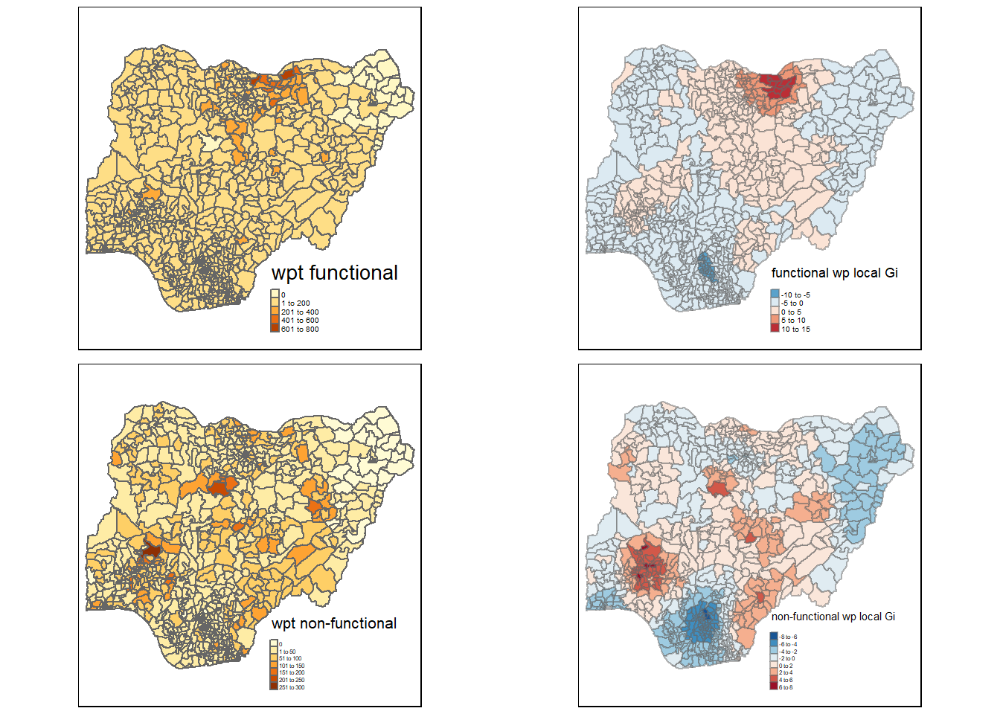
Mapping Gi Values with Adaptive Distance Weights
fips <- order(nga_wp$shapeName)
gif.adaptive <- localG(nga_wp$'wpt functional', knn_lw)
nga_wp.gif <- cbind(nga_wp, as.matrix(gif.adaptive)) %>%
rename(gstat_adaptive = as.matrix.gif.adaptive.)
ginf.adaptive <- localG(nga_wp$'wpt non-functional', knn_lw)
nga_wp.ginf <- cbind(nga_wp, as.matrix(ginf.adaptive)) %>%
rename(gstat_adaptive = as.matrix.ginf.adaptive.)
fwpt <- qtm(nga_wp, "wpt functional") +
tm_layout(legend.text.size = 0.3)
Gimapf <-tm_shape(nga_wp.gif) +
tm_fill(col = "gstat_adaptive",
style = "pretty",
palette="-RdBu",
title = "functional wp local Gi") +
tm_layout(legend.text.size = 0.3) +
tm_borders(alpha = 0.5)
nfwpt <- qtm(nga_wp, "wpt non-functional") +
tm_layout(legend.text.size = 0.25)
Gimapnf <-tm_shape(nga_wp.ginf) +
tm_fill(col = "gstat_adaptive",
style = "pretty",
palette="-RdBu",
title = "non-functional wp local Gi") +
tm_layout(legend.text.size = 0.25) +
tm_borders(alpha = 0.5)
tmap_arrange(fwpt, Gimapf, nfwpt, Gimapnf, asp=1, ncol=2)Variable(s) "gstat_adaptive" contains positive and negative values, so midpoint is set to 0. Set midpoint = NA to show the full spectrum of the color palette.
Variable(s) "gstat_adaptive" contains positive and negative values, so midpoint is set to 0. Set midpoint = NA to show the full spectrum of the color palette.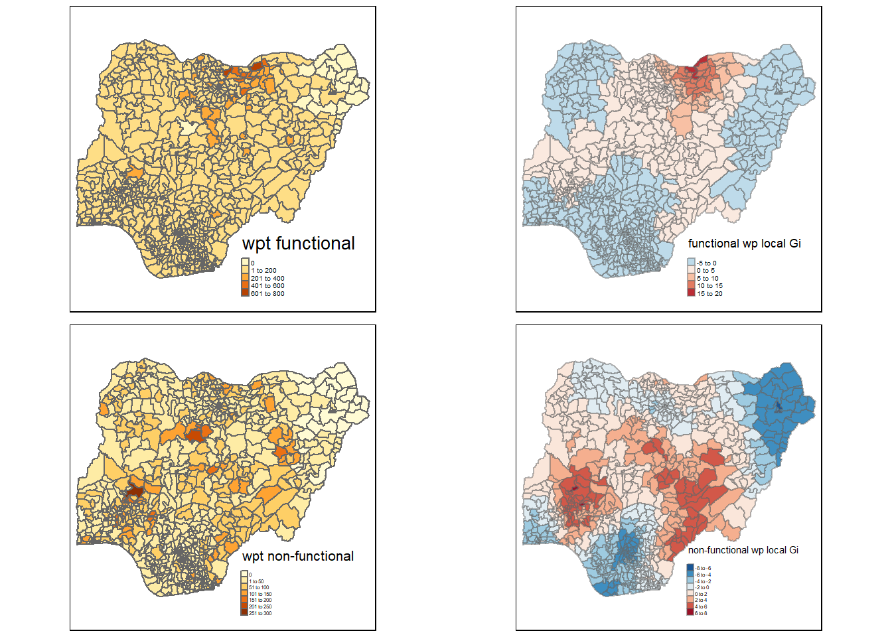